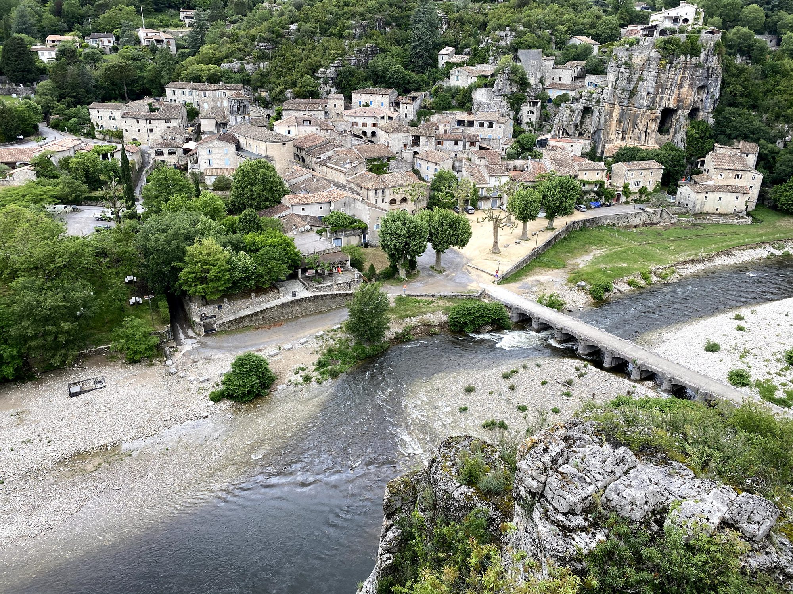

À une cinquantaine de minutes des Cabritas, Ruoms et Labeaume forment un duo de villages typiques du Sud Ardèche, à moins de 10 km des Gorges de l'Ardèche et du Vallon-Pont-d'Arc. L'un impressionne par ses remparts, l'autre par ses jardins accrochés à la falaise : deux ambiances complémentaires pour une même journée.
Ruoms, le village fortifié
Fondé au Moyen Âge et entouré de ses vieux remparts, le village de Ruoms se découvre à pied par ses ruelles fraîches et ombragées, bordées de balcons et terrasses fleuris. On y admire une église romane du XIVe siècle, plusieurs tours de défense, ainsi que le Musée Vinimage consacré aux vins d'Ardèche. Juste à la sortie du village, une route spectaculaire du XIXe siècle, creusée à même la roche, traverse une succession de tunnels et d'arches taillés dans les falaises calcaires.
Labeaume, jardins suspendus au-dessus de la rivière
À quelques kilomètres de là, Labeaume séduit par ses maisons de pierre nichées au pied de hautes falaises et par ses jardins en pleine nature, cultivés en balcon au-dessus du lit de la Beaume. L'atmosphère y est plus intime et sauvage qu'à Ruoms, avec un charme presque secret.

Bon à savoir avant votre visite
Les deux villages sont reliés par une randonnée d'environ 9 km qui longe les hauteurs de la rivière, alternant villages anciens et paysages naturels, avec plusieurs points de baignade en chemin. C'est une belle façon de combiner les deux visites en une matinée. Ruoms se trouvant à moins de 10 km du Pont d'Arc, il est facile d'enchaîner avec une baignade ou une descente en canoë dans les Gorges de l'Ardèche l'après-midi.
Infos pratiques depuis Les Cabritas
- Distance depuis Flaviac : environ 50 min de route
- Meilleure période : de mai à septembre, pour profiter aussi de la baignade
- Idéal pour : villages de caractère, randonnée facile, baignade en rivière
Envie de découvrir Ruoms et Labeaume depuis votre gîte en Ardèche ?
Les Cabritas vous accueillent à Flaviac, au cœur de l'Ardèche, pour un séjour confortable avec piscine privée, à deux pas des plus beaux sites de la région.
Vérifier les disponibilités